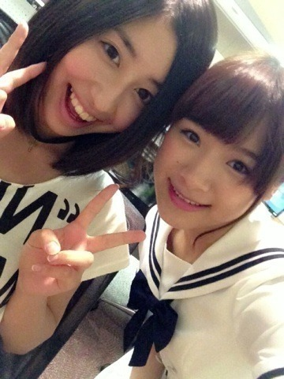
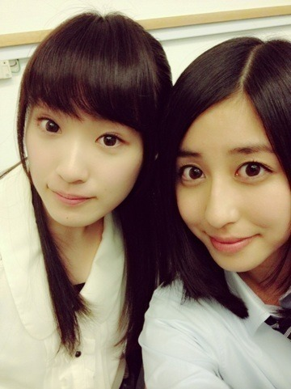
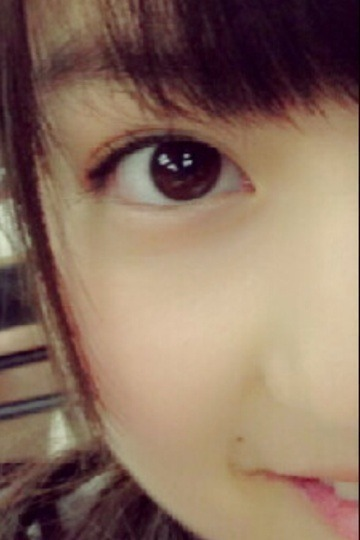

| 2013/06 17 Mon | ショート(´>∀<｀)ゝ |
ちはるーむへようそこ٩(˙▿˙)۶
いやー、おまたせしちゃいました
ごめんなさい( ´_ゝ`)
待っててくれた方ありがとう！
(´＿｀｡)(´＿｀｡)
昨日で、美雲は最後の活動でした。
美雲と、乃木坂の活動ができてよかったよ。
嬉しかったし、楽しかったよ！
美雲の元気、
美雲の明るさ、
美雲の優しさ、
美雲の温かさ、
そして美雲の笑顔。
全部全部ほんっとに大好きでした！
これからもずっと大好き！
いつも英語の宿題を教えてくれたり笑
最近、愛未に似てきたね〜( ＾ω＾ )笑
って言ってきたり笑
年下思いで、気遣い上手の美雲にはいつも憧れてたんだ。

できることなら、ずっとみんなで活動してたかったよ。
ずっと一緒に、側にいたかったよ。
でも、これからが新しいスタートだと思ってるから、
あたしは背中を押します。
これからどうしようとか、不安に思うことがあっても、
乃木坂46として活動してきたことにはかわりないし
これはずっと活きていくことだから
頑張ってきた自分に、自信を持ってほしい。
でもどうしても自分じゃ解決できないってことがあったら
いつでも、みんなに会いに来てね！
みくも、ありがとう。
そして卒業おめでとう。
これからもずっと、大好き！！！
xoxo...

(´＿｀｡)(´＿｀｡)
そしてっ新しいスタートの美雲に後押しされてっ
新しい自分！！！！
ショート！！！
ボブ！！！
感想、待ってるよ！
ショートいいねー
ロングがよかったー
ミディアムでいてほしかったー
なんでも待っておりますぞ

(´＿｀｡)(´＿｀｡)
遅くなりました。解答です。
今回はありえないくらいたくさんのメンバーが出ましたので
上位10人を発表します！！！
1位 かずみん
2位 ひめたん
3位 まいまい
4位 生駒
5位 愛未
6位 真夏
7位 まりか
8位 まあや
8位 れなりん
10位 ろってぃ
でした！！！
とゆことでー
結果はー
どーーーーーーーんっ

ずー！！！あずー！！！！かずーみん！！！！！
目を見開いたらしい。っす。
。
ちと、わかりやすかったかしらね〜
どぉするぅぅぅぅう

そしてっ今日はこちらっ

あれ.........わかりやすい.........カナ？
(´＿｀｡)(´＿｀｡)
このブランクの間、たくさんありました。
長いけども、あたしの日記のようなもの。
読んでみたら何かが変わる気がする。
と思ってるだけで何かが変わるよ。
まあやんちに泊まった。
愛未と飛鳥と泊まった。
呪怨をみた。
そのあとダンボみた。
そしてダンボで号泣。
目が腫れた。
その目のまま録音会。
噛みそうになった。
少し惨めな気持ちになった。
そして美雲が最後だった。
また号泣した。
家に帰った。
呪怨を思い出して怖かった。
学校へ行った。
学校が終わった。
まいまいとせいたんと待ち合わせした。
タピオカを飲んだ。
そのまま美容院へ行った。
ひとり早く終わったわたし。
そんな時に、ふいにお迎えがきた。
能條だった。
ロングになって女になった能條だった。
そのまま美容院からお暇した。
髪の毛が短いあたしは嬉しかった。
初めてbilsへ行った。
美味しかった。
そしてプリを撮った。
能條はその後なおちゃんと遊ぶらしい。
わたしは帰った。
ただいま。
今に至る。
今に至った。
うし。
あしたはみんなに驚かれるはずだ。
何人に言われるのだろう。
数えてみるのも楽しいと思っている。
でも忘れそうという不安もある。
この不安にどう立ち向かうかが、
今後の課題だと思う。
ショート。
だけど文章はロング。
ばいるんっ
るんるんっ
ちはるんっ
(´>∀<｀)ゝ
コメント(229)
2013/06/17 23:54